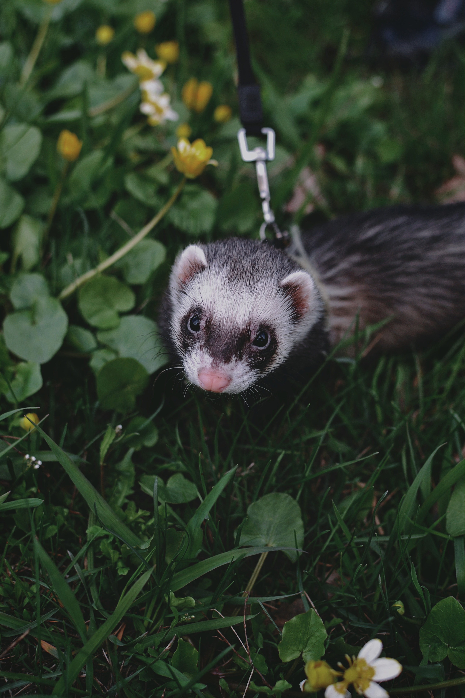

The cat is a domestic species of small carnivorous mammal. It is the only domesticated species in the family Felidae and is often referred to as the domestic cat to distinguish it from the wild members of the family

use of a mark in bootstrap
use ctrl+ p to open the print dialog box
The cat is a domestic species of small carnivorous mammal. It is the only domesticated species in the family Felidae and is often referred to as the domestic cat to distinguish it from the wild members of the family
Also spelled racoon and sometimes called the common raccoon to distinguish it from other species, is a mammal native to North America. It is the largest of the procyonid family, having a body length of 40 to 70 cm (16 to 28 in), and a body weight of 5 to 26 kg (11 to 57 lb).

The dog is a domesticated descendant of the wolf. Also called the domestic dog, it is derived from extinct Pleistocene wolves, and the modern wolf is the dog's nearest living relative. The dog was the first species to be domesticated by humans.

A ferret is a small, domesticated species belonging to the family Mustelidae. The ferret is most likely a domesticated form of the wild European polecat (Mustela putorius), evidenced by their interfertility. Physically, ferrets resemble other mustelids because of their long, slender bodies
column right
Animal
Raccoons, like squirrels, are notorious for digging through trash cans and invading human homes. Adorned with distinctive mask-like face markings, fluffy tails, and almost human-like hands, people have a love-hate relationship with raccoons.
Veterinary
Dogs’ sense of smell might be pretty amazing, but don’t forget about their hearing! Everything from the positioning of their ears to the muscles in them helps dogs pick up a whole host of sounds that humans can’t hear
About me My pets Client feedbackNutritionist
he ferret was domesticated several thousand years ago to help hunters flush rabbits from their holes (“ferreting out”) and also to catch small animals such as rats and mice.[2]
Veterinary
Dogs’ sense of smell might be pretty amazing, but don’t forget about their hearing! Everything from the positioning of their ears to the muscles in them helps dogs pick up a whole host of sounds that humans can’t hear
About me My pets Client feedbackVeterinary
Dogs’ sense of smell might be pretty amazing, but don’t forget about their hearing! Everything from the positioning of their ears to the muscles in them helps dogs pick up a whole host of sounds that humans can’t hear
About me My pets Client feedback
Veterinary
Dogs’ sense of smell might be pretty amazing, but don’t forget about their hearing! Everything from the positioning of their ears to the muscles in them helps dogs pick up a whole host of sounds that humans can’t hear
About me My pets Client feedback
Veterinary
Dogs’ sense of smell might be pretty amazing, but don’t forget about their hearing! Everything from the positioning of their ears to the muscles in them helps dogs pick up a whole host of sounds that humans can’t hear
About me My pets Client feedback